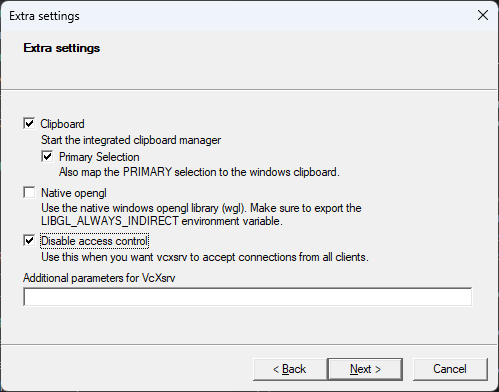
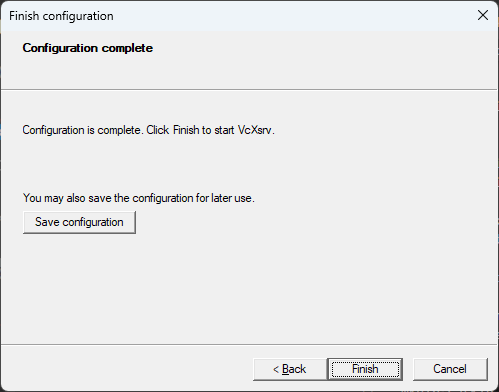
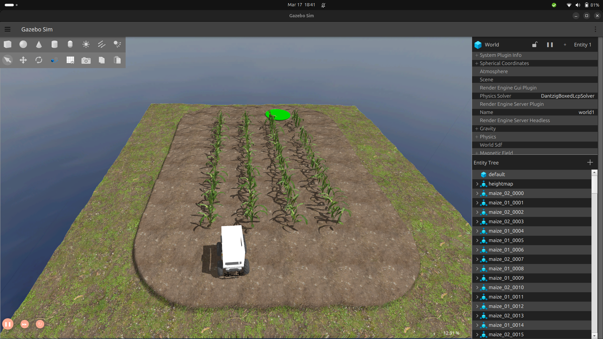
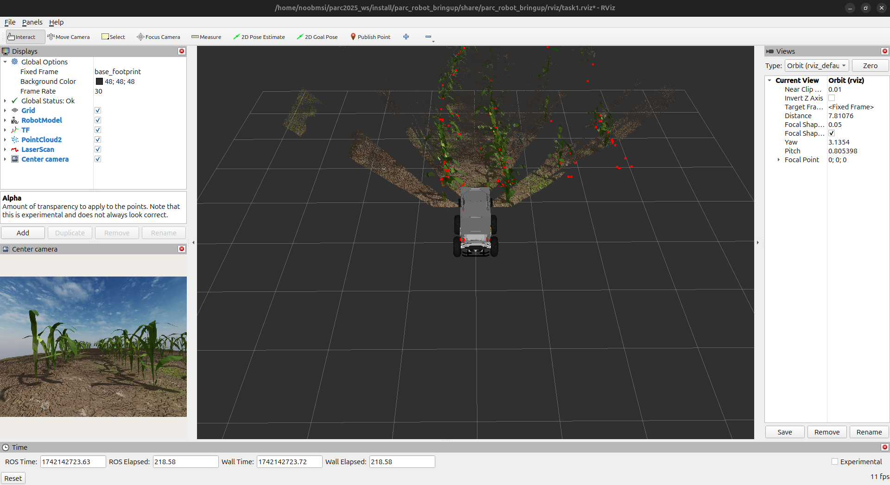

Setting up your PC with Docker on Windows¶
This guide will walk you through the process of setting up an Ubuntu environment and ROS workspace on your Windows PC using Docker, which will allow you to easily develop and test your ROS projects in a containerized environment. We will also cover how to connect VS Code to the Docker container and how to use X11 to run GUI Docker apps.
Note
This guide is designed for individuals who plan to use the Docker image. If you want to set up your PC and workspace on a host machine, please consult the instructions provided in Setting up your workspace.
Prerequisites¶
Before starting with the steps below, ensure that you have the following:
- Docker Desktop for Windows installed and running
- Visual Studio Code (VS Code) installed
- Git installed
Step 1: Install VcXsrv¶
- Download and install VcXsrv on your computer.
- Install VcXsrv by running the installer and following the prompts.
- Once the installation is complete, open the VcXsrv by clicking on the Start menu and typing
XLaunch. - In the XLaunch window, select the
Multiple windowsoption and clickNext.
- In the next window, select the
Start no clientoption and clickNext.
- In the next window, select the
Clipboardoption and clickNext. Deselect theNative opengloption and select theDisable access controloption.  - In the next window, click
Finish. 
Step 2: Creating the main folder and docker-compose.yml¶
- Create a new folder in your preferred location and name it
PARC_docker -
Inside
PARC_dockerfolder, create a ROS workspace by running the following command in Powershell: -
Next, create a
docker-compose.ymlfile insidePARC_dockerfolder. This file will contain the configuration for our ROS Docker container. Open the file in your favorite editor and add the following lines:This configuration will pull the official image for PARC 2023, if it does not already exist, and configure it for X11 server support. It will also mount theversion: '3.8' services: ros: image: parcengineersleague/parc-2023 container_name: parc-ros-docker-1 environment: - DISPLAY=host.docker.internal:0.0 - ROS_HOSTNAME=ros - ROS_MASTER_URI=http://ros:11311 volumes: - ./catkin_ws:/catkin_ws ports: - "11311:11311" command: roscorecatkin_wsfolder inside the container and start theroscorecommand when the container starts. -
Save the
docker-compose.ymlfile and close your editor.
Step 4: Building the Docker container¶
-
In a new Powershell window, navigate to the
PARC_dockerand run the command to build the Docker container: -
Once the container is built, you can verify that it’s running by running the following command:
You should see the following output:
Step 5: Opening a terminal in the Docker container¶
-
To open a terminal in the Docker container, run the following command:
whereparc-ros-docker-1is the name of the container. You can find the name of the container by running thedocker pscommand. -
Once the terminal is open, you can verify that you are in the container by running the following command:
You should see the following output:
This means that you are in the container and that the ROS distribution is set to Noetic.
Step 6: Test installation¶
Note
You might need to source the environment variables first using this command:
source /home/parc/catkin_ws/devel/setup.bash
If you completed the preceding tasks successfully, you should be able to run this ROS launch command and see the Gazebo simulator and RViz simulator open with the following display:
 Gazebo Simulator window RViz window
You need to publish/write to the topic /cmd_vel to move the robot.
In the following step, you will learn how to control the robot manually using your keyboard. Once you have tested that, you can follow the Getting Started with ROS guide to learn how to write a program to control the robot.
Step 7: Controlling the robot using keyboard¶
-
Open a new Powershell terminal and execute the Docker container as done above:
-
Run the following command in the terminal:
Now keeping the second terminal on top (teleop.launch) press i to move the robot forward, you can see the robot moving in “RViz” and “Gazebo” windows.
you can use the keys shown below to move the robot and k key to stop the movement.
Step 8: Developing inside the container with VSCode¶
-
Install the Dev Containers extension in VSCode.
-
Click on the green icon in the bottom left corner of the VSCode window and select
Open Folder in Container.... -
Select the
catkin_wsfolder. -
VSCode will now open the
catkin_wsfolder inside the container. -
You can now use VSCode to edit files in the
catkin_wsfolder.
Alternatively, since we have already created a volume for the catkin_ws folder, you can also use your favorite editor to edit files in the catkin_ws folder on your host machine. The changes will be reflected inside the container. The advantage of using VSCode in the container is that you can use the integrated terminal to run commands inside the container.